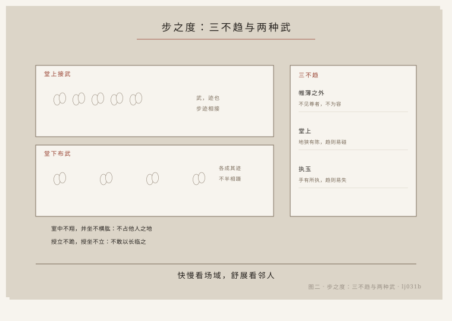

曲礼上 · 一·三十二 · 第 31 课
这一节讲走法：帷幕之外不快走，堂上不快走，执玉不快走；堂上用细步，堂下用大步；室中不张臂；并坐不横肱；授物与立者不跪，与坐者不立。
说什么事：帷薄之外不趋，堂上不趋，执玉不趋；堂上接武，堂下布武；室中不翔；并坐不横肱；授立不跪，授坐不立。
落在哪一层：教。上节讲进门的次序，这节讲进门之后怎么走、怎么坐、怎么递东西。
为何编在此位：位既定，步与手才有分寸；此节正是「位」之后的第一层身体规矩。
【经】帷薄之外不趨，堂上不趨，執玉不趨。堂上接武，堂下布武。室中不翔。並坐不橫肱。授立不跪，授坐不立。
趋 郑注：「不见尊者，行自由，不为容也。入则容，行而张足曰趋。」——趋是张足快走，是一种「为容」的姿态。
帷薄之外不趋 帷薄是分隔内外的帘幕；其外不见尊者，故不必作趋之容。
接武 疏：「武，迹也。」堂上步子相接，前脚迹与后脚迹相承。
布武 疏：「郑谓每移足各自成迹，不半相蹑。」王云：「谓迹间容足。」
翔 张臂而行曰翔。室中地窄，张臂则碰人碰物。
横肱 并坐而横出手臂，占邻座之地。
授立不跪，授坐不立 郑注：「尊者短则跪，不敢以长临之。」——授物与立者，己亦立；与坐者，己亦坐。
帷幕之外不快走，堂上不快走，拿着玉不快走。堂上细步相接，堂下大步各成足迹。室中不张臂而行。与人并坐不横出手臂。把东西交给站着的人，自己不跪；交给坐着的人，自己不站。
全节一个「度」字：什么地方用什么步幅，什么场合用什么手势。礼不是慢，是该慢的地方慢；不是小，是该小的地方小。
第一层 三处不趋，各有理由 帷薄之外，不见尊者，趋是空作姿态；堂上地狭且有陈设，趋则易碰；执玉在手，趋则易失。同是「不趋」，理由三样——礼的每一条都有它的所以然，不是一律求慢。
第二层 接武与布武：步幅即场域 堂上相接，堂下各成迹。堂是尊者所在，步小则静、则敬；堂下开阔，步大则常。疏引王肃「迹间容足」，是说堂下之步，两迹之间可容一脚——宽而不乱。
第三层 室中不翔、并坐不横肱：不占他人之地 室中张臂则碰，并坐横肱则侵邻。两条一理：空间是共有的，你的舒展不能以别人的局促为代价。
第四层 授立不跪、授坐不立：授受的等高 郑注一句「不敢以长临之」：人站着，你若跪下递物，是以自己的低反衬对方的高，反使尊者不安。故与立者俱立，与坐者俱坐——授受之际，两人一般高。
与今日何干 今日的「不趋」是走廊奔跑、会场穿行、镜头前抢位；「横肱」是地铁上摊开两臂。此节的道理极实用：快慢看场域，舒展看邻人。
| 左 | 右 |
|---|---|
| 帷薄之外不趋 | 不见尊者，行自由，不为容 |
| 堂上不趋 | 地狭有陈，趋则易碰 |
| 执玉不趋 | 手有所执，趋则易失 |
| 堂上接武 | 武，迹也；步迹相接 |
| 堂下布武 | 每移足各成迹，不半相蹑 |
| 室中不翔，并坐不横肱 | 不占他人之地 |
| 授立不跪，授坐不立 | 不敢以长临之 |
画一段堂上与堂下的地面：上段是铺席的堂面，席纹细密，足迹浅而相接；下段是夯土庭面，足迹疏而成对；交界处一道石阶。画面中段留一处空，地上摆一枚玉璧在木托上。不画人，不写文字。赭色只在玉托与阶石边缘。
